EuroLinux 9 Beta Jump Start
This document contains the necessary information to set up your first EuroLinux 9 Beta installation.
System Requirements
x86_64 (64 bit AMD/Intel architecture)
Minimal and recommended requirements are following:
| Resource | Absolute minimal requirements for cloud deployment | Minimal | Recommended |
|---|---|---|---|
| Logical CPU | 1 | 1 | 1 |
| RAM | 1 GiB or 768 MiB with swap space | 2 GiB | 1.5 GiB per logical CPU |
| Storage | 5 GB (excluding swap) | 10GB | 20GB |
Logical CPU means Physical CPU (including Hyper-Threading) or vCPU (virtual CPU).
Warning
It might be impossible to install EuroLinux on a system that does not meet recommended requirements.
About absolute minimums for cloud deployment
During our internal testing, we were able to boot and use very basic and already installed services on Virtual Machine with only 340 MiB of RAM. However, without additional memory or at least swap space available, things like updating the system will result in actions of Kernel Out of Memory (OOM) Killer.
You can try it yourself with EuroLinux Vagrant boxes and the following Vagrantfile:
Vagrant.configure("2") do |config|
config.vm.box = "eurolinux-vagrant/eurolinux-9"
# Explicitly disable vbguest because we are using rsync
if Vagrant.has_plugin?("vagrant-vbguest")
config.vbguest.auto_update = false
end
config.vm.provider "virtualbox" do |vb|
vb.memory = "340"
vb.cpus = 1
end
config.vm.provider "libvirt" do |vb|
vb.memory = "340"
vb.cpus = 1
end
end
It's also possible to install EuroLinux on less than 5 GB of space, but it also requires extra attention.
All absolute minimums for cloud deployments described above are not officially supported by EuroLinux.
Secure boot
Since EuroLinux 9 Beta is a pre-release version and not ready for production use, Secure Boot support has not been implemented.
How to install EuroLinux 9 Beta from ISO
Where can you obtain ISO?
We distribute EuroLinux in a responsible open core model. Because of that, you might download EuroLinux from different sources. The two primary sources are:
- https://fbi.cdn.euro-linux.com/isos/ open for everyone
- https://customerportal.euro-linux.com for EuroLinux customers
The only difference is that Customer Portal keeps older versions, when CDN, that is used for mirroring, keeps only two of the latest ISOs for each version to save space (single EuroLinux BaseOS ISO might take up to 8 GB).
If you are running a huge deployment, you might consider setting up your own mirror and download ISOs from Intranet.
How to check ISO integrity
During download, many things can happen - from a network or sending host failure to single-bit error. To check if ISO is undamaged, there are two mechanisms in place.
- For each EuroLinux ISO there's a file with its checksums and appropriate
digest algorithms. Its name says, which algorithm was used to calculate the
cryptographic digest. For example, you can browse
https://fbi.cdn.euro-linux.com/isos/
and read the
sha1sums.txtfile.
When the ISO download is completed, you can invoke the sha1sum command on the
ISO file and check if checksums match.
$ sha1sum EL-9.0-x86_64-20220225-minimal.iso
73d39d443e27414085f7107fa21dd214d28b8730 EL-9.0-x86_64-20220225-minimal.iso
- The second mechanism for checking ISO integrity is built-in inside the
installer itself. When you start the installation, use the
Test this media & install EuroLinux 9entry:
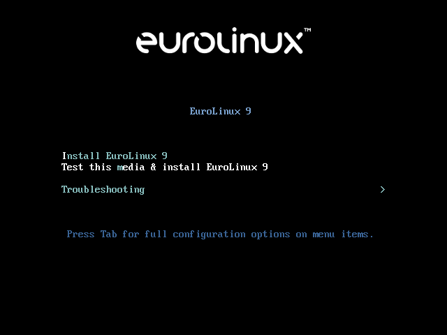
After booting up, the ISO checking process will start.
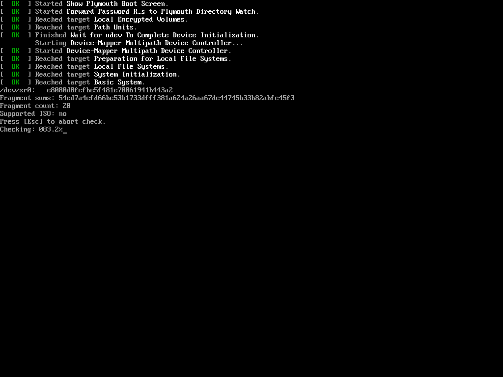
Installation with GUI
Because even a minimal installation uses a GUI the whole process is simple and straightforward. EuroLinux 9, as well as previous versions, uses Anaconda installer that clearly informs the user what needs to be done in order to install the system.
First, you have to choose the language that will be used during installation:
Hint: since the Anaconda installer on EuroLinux 9 activates a network
connection automatically if applicable, it also determines the default language
by the automatic location detection feature - in this case you can see that
Polish has been automatically chosen.
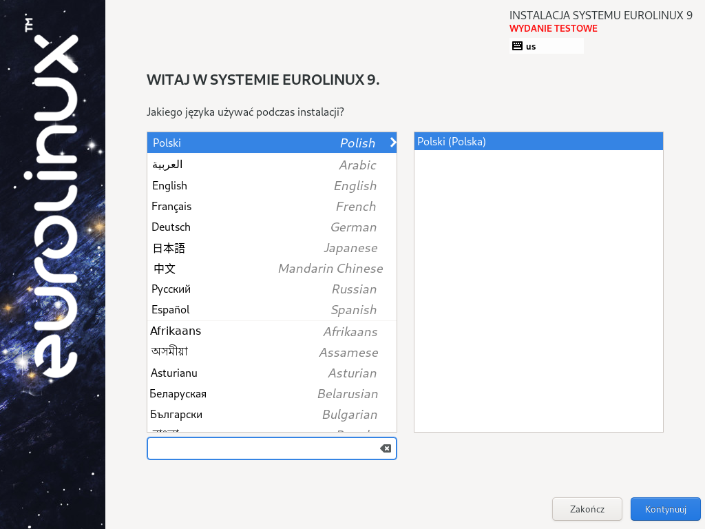
Since this is a Beta release, we might need to confirm that we are aware of this fact and that this release should not be used in production.
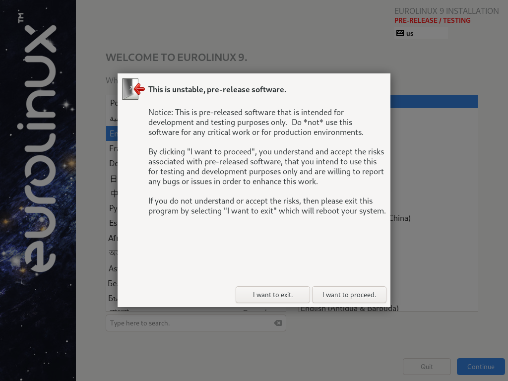
After configuring the installer language you should see a menu similar to:
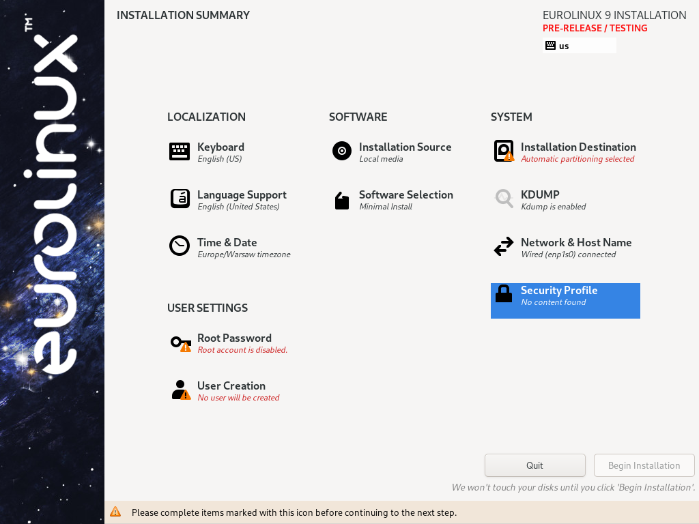
Anaconda installer LOCALIZATION section:
- Keyboard - this section allows you to setup keyboard layouts, including the default keyboard layout, additional layouts and key combination to switch between them.
- Language support - additional languages packages that should be installed.
- Time & Date - configure the date, time zone, enable NTP and NTP servers.
Anaconda installer SOFTWARE section:
Configuring source of the installation
Here you might configure the source of your installation. By default, the system installs from the ISO image itself. This is one of the officially supported ways to install EuroLinux.
If a NIC (Network Interface Card) has been enabled in the Network & Host Name installer section, you might add additional EuroLinux repositories and/or other repositories. If you add EuroLinux repositories, the installer will automatically download newer version of the packages.
EuroLinux 9 Beta repositories:
- URL:
https://fbi.cdn.euro-linux.com/dist/eurolinux/server/9/$basearch/certify-beta-BaseOS/os
Name: BaseOS - URL:
https://fbi.cdn.euro-linux.com/dist/eurolinux/server/9/$basearch/certify-beta-AppStream/os
Name: AppStream - URL:
https://fbi.cdn.euro-linux.com/dist/eurolinux/server/9/$basearch/certify-beta-PowerTools/os
Name: PowerTools
Limited support.
Hybrid network installation from both ISO and public repositories is not our primary goal in the QA process. Packages in EuroLinux repositories are regularly updated, and it might be impossible to install a system from an external source. Depending on the state of the upstream, we might not fix a potential issue.
Below you can see an example configuration that was used to install a system - in this case the default 'Minimal' repository has been provided as the only one:
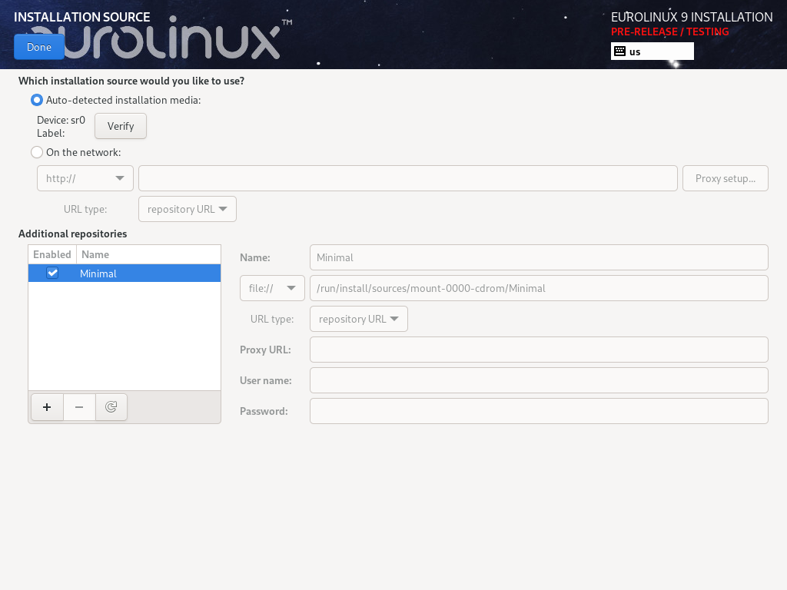
After changing the installation source, you will have to confirm Software Selection.
Software Selection
Software Selection allows you to customize which packages will be installed. You might choose from base environment groups like Server with GUI, Workstation or Minimal Install - since we are demonstrating with the minimal ISO image, only the last option is available. You can also install additional package groups.
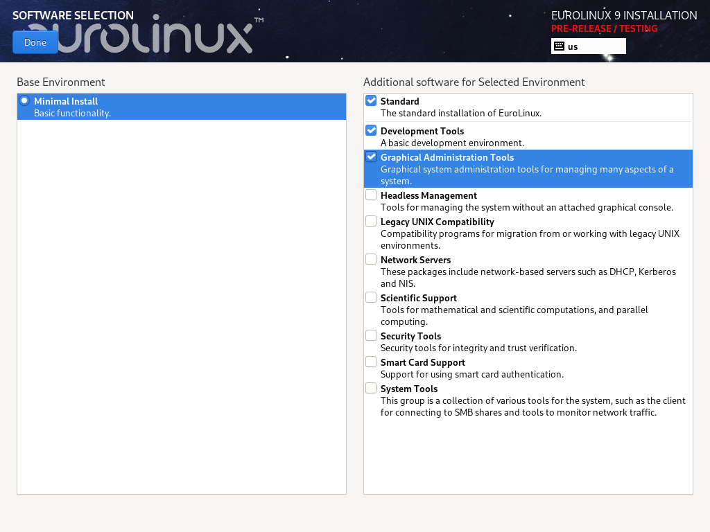
Anaconda installer SYSTEM section:
- Installation selection allows choosing on which disk the system will be installed. If you want to have a fully encrypted system, you should enable encryption in this step.
- KDUMP allows choosing if KDUMP (Kernel crash dump collection mechanism) should be enabled.
- Network & Host Name - you can configure your system networking here
- Security Profile - you can setup an additional openscap policy here
Anaconda installer USER SETTINGS section:
- Root Password - by default, the root user is disabled. If a user is created in User Creation section, the root account can stay disabled
- User Creation section allows creating a regular user in the system. If the Make this user administrator option is checked, the root account can be disabled.
After applying all the necessary changes, the installation can be started with the "Begin Installation" button.
Disk partition recommended minimums
You need at least the following partitions.
/bootfor Linux kernel and init ramdisks - 1GB/(root partition) - at least 10 GB (a very minimal system might use as little as 2GB - but it requires extra attention and is not officially supported by EuroLinux)
For UEFI, an EFI system partition is also required.
/boot/efi- at least 100MB
If your storage allows it, the following partitions are also highly recommended:
swap- 1GB or more depending on the system RAM and workload. Swap is also required for hibernation. Depending on the workload of the system, it should be at least as spacious as system RAM./home- at least 1GB - but in most cases, if/can be as big as 80GB, then/home/usually takes the rest of the free space
Installing EuroLinux in basic graphic mode
Suppose there is a problem loading/running your graphics card driver (it might results in a black screen/error message or graphical artifacts). It's possible to install EuroLinux in basic graphics mode.
To do so, choose Troubleshooting on the welcome menu, and then Install
EuroLinux 9 in basic graphics mode.
From this point the process is identical to a standard installation with GUI.
Installing EuroLinux in text mode
To install EuroLinux in text mode:
- Boot EuroLinux ISO
- Press Esc to stop installation options selection timeout
- Press Tab
- Add
inst.textto the end of the kernel boot command line - Press Enter
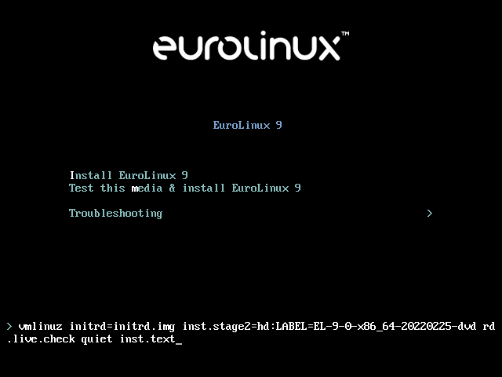
Since the Anaconda installer on EuroLinux 9 activates a network connection automatically if applicable, it also determines that we can start VNC or use text mode entirely. Since we are demonstrating the text mode installation, we choose the latter option.
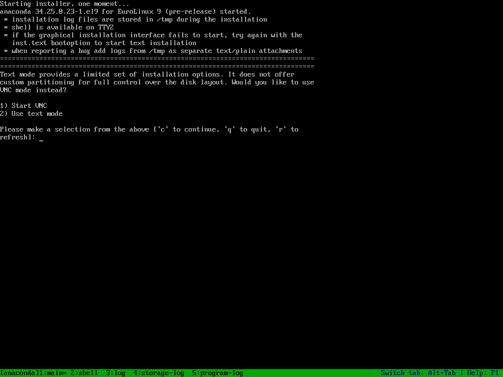
Before running the installation you have to provide all the necessary
information (represented as ! in selection). It's a good idea to refresh the
menu with R+Enter command shortly after the installer started.
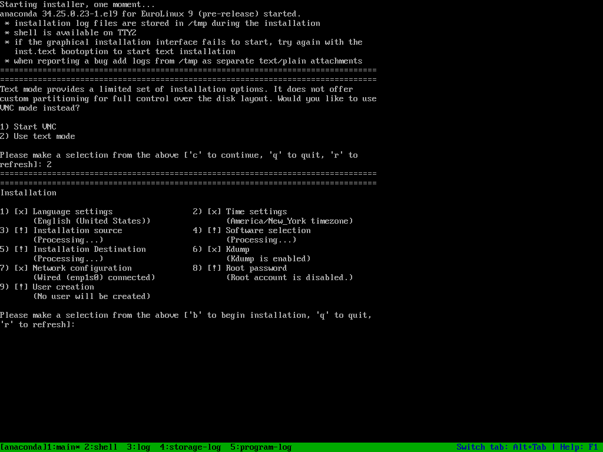
After customization you are ready to start your installation.
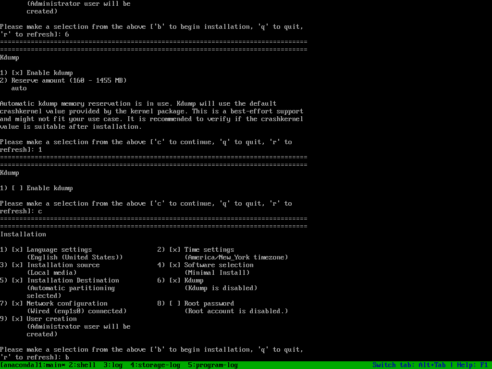
Other possibilities
EuroLinux can also be installed in the following manner:
- Automated installation with a kickstart file.
- Installation with PXE
- Installation via VNC (as mentioned above)
Please consult upstream documentation about these topics.
Using EuroLinux
From this point, you can use EuroLinux as any other RHEL™ based distribution.
Submitting a Request for Change
We truly care. If there is something that you believe could/should be changed/improved in the EuroLinux distribution and does not break compatibility with the upstream project, then drop us the issue on GitHub! All contributors are extremely welcome.
Submitting a Bug report
We decided that submitting bug reports should not involve registration into some nasty miserable software. At the very same time, we know that most open-source developers have GitHub profiles. This choice makes the decision making and work as transparent as possible. That's why we decided to use it as the primary way to submit bugs.
This repository allows you to stay in direct contact with EuroLinux developers.
Other ways to submit a bug report
support AT euro-linux dot com- EuroLinux Support Portal (subscription required)
Security/confidential bug report
Please use the e-mail provided above.